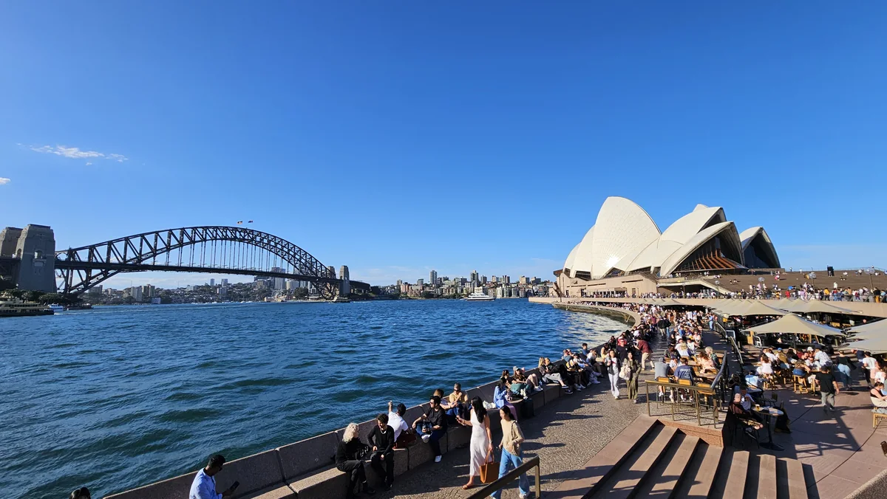
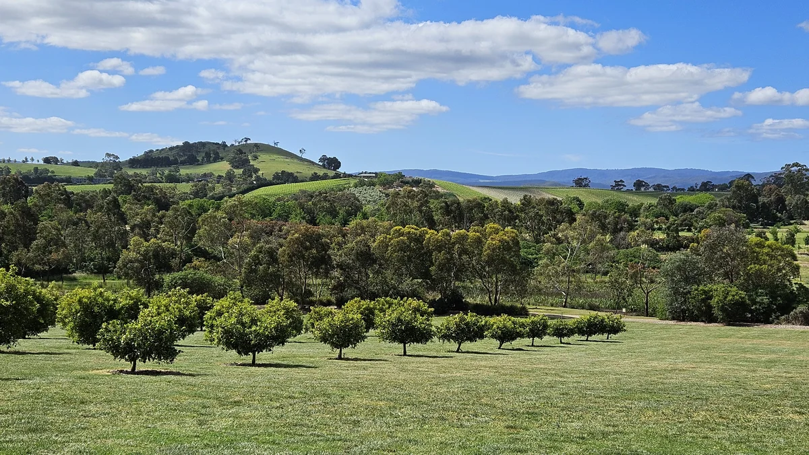
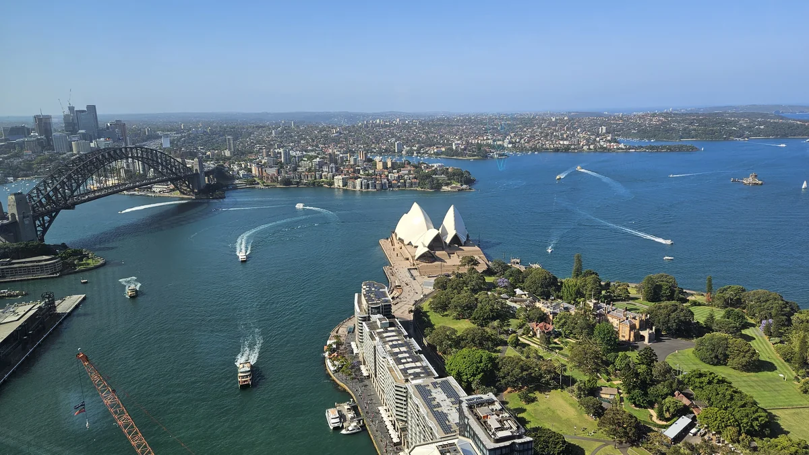
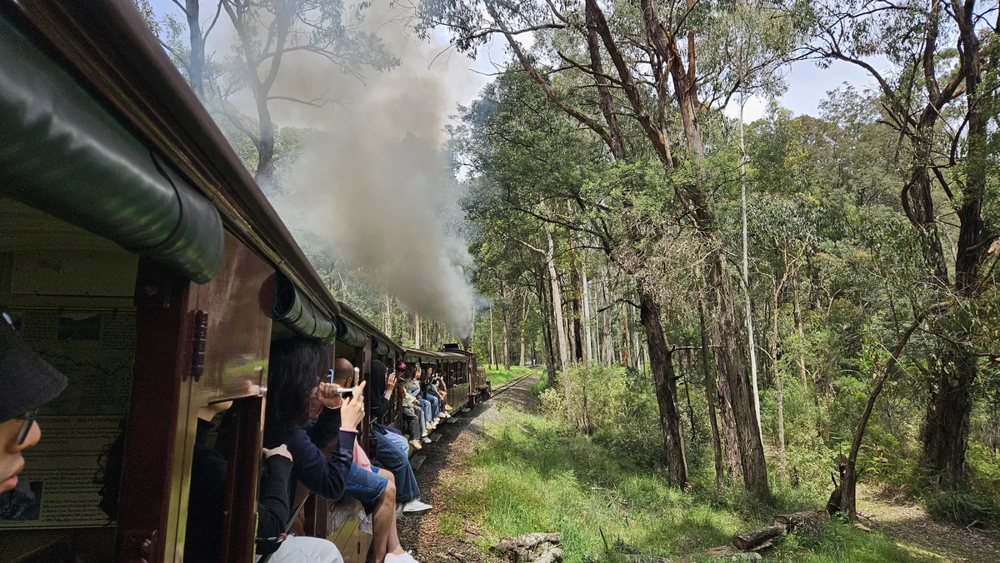
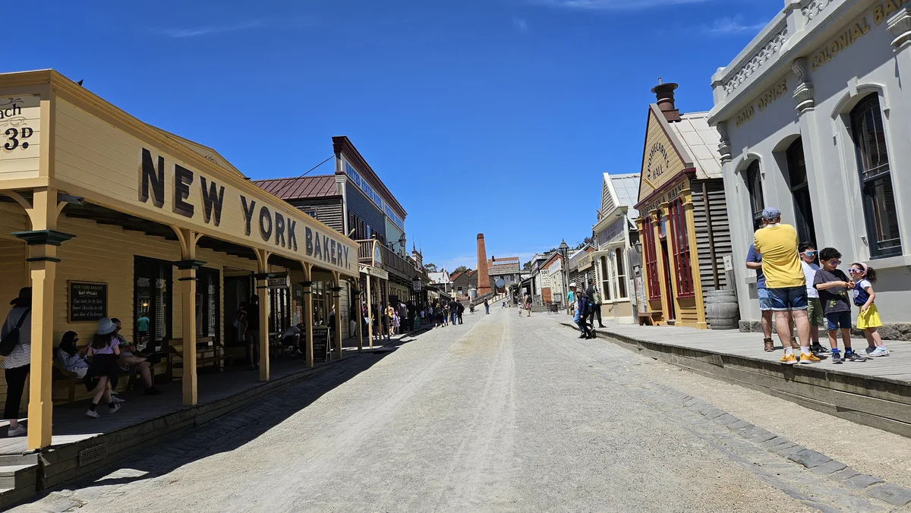

Day 01-02 特別篇🏙️ 雪梨港灣 ✕ QVB ✕ 魚市場 ✕ 空中黑幫
雪梨出差變地陪：48小時專案驗收，擺平空中黑幫突襲
一趟原本正經八百的商務出差，因為妹妹一起同行，意外變成兩天的雪梨觀光特別篇；沿途還遇上從雪梨港一路巡場到海德公園的空中黑幫。
閱讀全文 · 完整圖文 →
從雪梨港灣海風到墨爾本維多利亞時代林蔭，走入亞拉河谷起伏萬里的綠色大平原。不盲目趕景點，以真實自嘲的視角記錄南半球的遼闊與微醺。
商務出差與海港慢遊交織，從歌劇院、魚市場的海風吹拂，一路登上 46 樓鳥瞰天際線與探訪極致躺平的澳洲原生動物。

Day 01-02 特別篇一趟原本正經八百的商務出差，因為妹妹一起同行，意外變成兩天的雪梨觀光特別篇；沿途還遇上從雪梨港一路巡場到海德公園的空中黑幫。
閱讀全文 · 完整圖文 →
Day 03-04 精選在辦公大樓高空俯瞰歌劇院與港灣，走入野生動物園遇見集體昏睡的慵懶考拉與袋鼠。
閱讀全文 · 完整圖文 →規劃從雪梨去墨爾本時，我原本想搭夜班火車。
想像中，晚上上車，伴著鐵軌「匡噹匡噹」一路睡，隔天早上睜開眼睛，人已經到了另一座城市。既省下一晚住宿，又有一種鐵道旅人的浪漫——日本 NHK 的歐洲鐵道之旅看過吧？那種畫面一出來，我大腦連背景 BGM 都想好了，只差買票。
然後我真的去查了時間跟票價。
臥鋪要坐大概十個小時，價格卻沒有比較便宜。大腦還沉浸在夜車浪漫裡，我的腰卻非常清醒，對整個計畫投下反對票。
再查澳洲國內線機票，單程一個人大約台幣四千元，飛行時間只要一個半小時。
突然覺得，對臥鋪夜車最美的幻想就是要...愛護它保護著它...然後買票坐飛機 XD
於是，早上人還在雪梨，中午就已經在墨爾本了。這四千元除了買到一張機票，還買回了隔天可以正常走路的腰。

接下來要聊聊墨爾本的住宿選擇。
墨爾本市中心的飯店，價格真的不知道在貴幾點的。想想我們接下來幾天都安排了一早出發的 Klook 行程：去酒莊、搭蒸汽火車、看企鵝。白天根本不在市區，晚上回飯店也只剩洗澡、睡覺，以及把人和手機一起插回去充電。
既然飯店的主要功能只是把我們兩個人充飽電，實在沒必要花市中心的天價，租一個晚上根本沒時間欣賞的地址。
所以我們訂了距離市中心大約半小時電車車程的郊區 Novotel。飯店就在電車站附近，可以一路坐到 Klook 集合地點；隔壁還有大賣場、藥妝店和各種餐館，反而比我原先想得方便。
放好行李後，我們先去大賣場補貨，最後找了一家華人開的小餐館吃牛肉麵。
常常有人說出國一定要品嚐當地的風味美食，但走跳了這麼多地方，每次出國大概幾天之後，第一個考慮的永遠都是附近有沒有中國餐廳。雖然口味鹹了一點，但至少吃的是熱的。看著那碗熱氣騰騰的牛肉麵端上桌，我和妹妹連話都懶得講，拿起湯匙先喝了三大口熱湯。那一瞬間，什麼雪梨天際線、港灣大橋，在熱騰騰的紅燒牛肉麵面前通通不值一提。
墨爾本第一天最讓我印象深刻的，倒不是飯店或牛肉麵，而是電車。
來之前我做過功課，知道墨爾本市中心(CBD)有免費電車區(Zone 1)，離開免費區後就要付費。我們住得比較遠，所以抵達墨爾本後，我還很規矩地在 Android 手機裡買了數位 Myki，先加值十塊澳幣，當一名堂堂正正的觀光客。
我帶著一種「功課都做完了，這題我會」的自信踏進車廂，結果沒幾分鐘，就開始覺得哪裡不太對。
那是一輛又新又亮的電車，三節車廂、六道門，每道門左右各掛著一台刷卡機。設備非常齊全，十二台一字排開，完全沒有要乘客找不到的意思。
老實說，上車前我還在糾結到底是要「上車刷」還是「下車刷」，心想先按兵不動，看別人怎麼刷。
結果，下車的沒刷，走在我前面上車的沒刷，跟在我後面的也沒刷。大家都直接從刷卡機旁邊飄過去，自然得像那台機器只是個擺設。
我手裡握著剛加值完成的手機，原本已經準備好要「嗶」下去，最後卻尷尬地停在半空中。那個姿勢很像在教室裡熱情舉手準備回答問題，舉了三秒才發現老師根本沒出題。
我心想：這十二台機器到底是拿來刷卡的，還是電車的裝置藝術？我第一次遇到已經加值，卻找不到時機把錢付出去的交通系統。
更奇妙的是，後來不管搭到哪一區，我看到的情況都差不多。乘客很自然地上車、下車，司機在封閉的駕駛艙裡專心開車，只有我還在研究自己的 Myki 到底什麼時候拿出來，才不會顯得太突兀。
司機的分工看起來也很明確：我負責把車安全開到站；查票是稽查員的事；至於你到底有沒有刷卡，那是乘客跟上帝之間的事。
我忍不住轉頭跟妹妹說：「墨爾本政府看起來財政也沒有特別富有啊，全車都沒人刷卡，這套系統是靠什麼信念在維持營運的？」
妹妹看了一眼我還拿在手上的手機，只回了一句：「所以你到底要不要刷？」
後來上網一查，才發現墨爾本電車逃票確實是很多人在討論的事；火車則有查票，沒買票被抓到，罰款可以重到讓人當場重新思考人生。
所以今天的心得大概是這樣：四千元成功拯救腰椎，十幾塊澳幣則讓我成為整節電車裡最孤獨的觀光客。
在雪梨的前幾天，出差和觀光混在一起，節奏一直比較緊。
到了墨爾本，我才覺得整個人慢慢鬆下來。感覺這裡的生活感比較強，節奏也比較隨性。
心裡悄悄冒出一句：「我比較喜歡墨爾本。」
那時候我們才剛抵達，真正的郊區行程還沒開始。隔天要跟著妹妹去亞拉河谷，本來只是想看看酒莊、喝點酒，沒想到後來讓我遇上整趟旅行最喜歡的一片大草原。
至於那十二台刷卡機到底靠什麼信念維持營運，我到現在還是沒有想通。
想不通也沒關係，隔天先去喝酒。
生活節奏隨性切換，深入亞拉河谷起伏無際的大草原、搭乘百年蒸汽火車吹著微涼山風，以及週末前往疏芬山淘金鎮展開時空沉浸式冒險。
聽從妹妹提議成行，在南半球微醺與遼闊大地上找到答案。蘇瑪酒莊、聖休伯特、四柱琴酒與午後破雲而出的壯麗大草原全景。
閱讀全文 · 完整圖文 →
Day 07 精選窗框懸空雙腳伸出車外體驗百年煙燻肉乾；Maru 看袋鼠集體躺平、諾比司角迎戰海鷗鳥糞味；夜戰刺骨海風守候神仙小企鵝歸巢。
閱讀全文 · 完整圖文 →
Day 08 收官篇墨爾本最後一天不逛街，我們自己轉車去十九世紀淘金鎮玩實境 RPG。V/Line 週末特惠火車、紅衣警長突襲禮炮、深入地底濕涼礦坑，以及一段在英式別墅裡的午後奇遇。
閱讀全文 · 完整圖文 →